Ideas para tus fiestas
Juegos gratis, cuentos para leer en familia, ideas de regalo y planes en casa.
Lo más útil ahora

Calendario de Adviento personalizado con nombre: 3 formas de hacerlo especial este año
Calendario de Adviento con su nombre bordado, de madera para rellenar o para imprimir en casa con 24 retos. Ideas para niños, pareja y familia, qué meter en cada bolsillo y hasta qué día pedirlo para empezar el 1 de diciembre.

12 regalos originales de menos de 20 € para Navidad y el amigo invisible
Ideas de regalos originales por menos de 20 euros para Navidad, Reyes y el amigo invisible: para niños, para casa, para mascotas y para quien lo tiene todo. Con envío gratis a España.
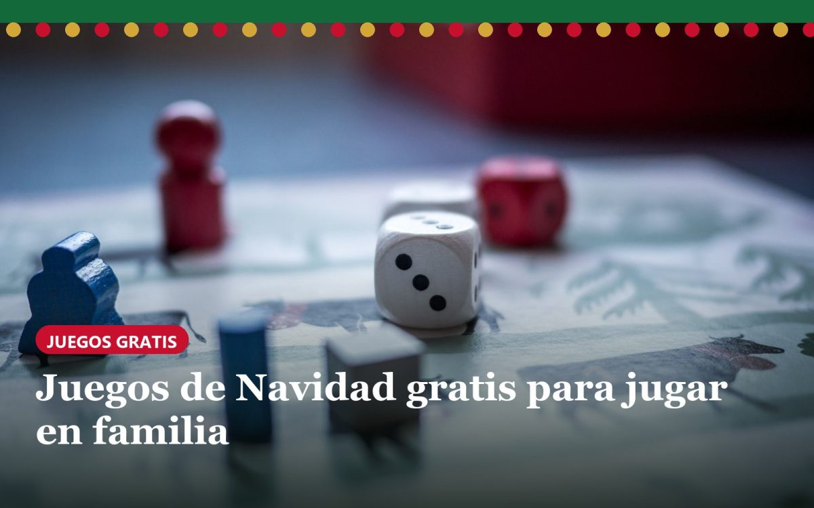
Juegos de Navidad gratis para jugar en familia (sin comprar nada)
14 juegos de Navidad para jugar en familia sin gastar nada, solo con papel y boli: para todas las edades, para niños pequeños, para adultos y para la sobremesa. Con PDF gratis de bingo, mímica y adivinanzas.

Los mejores juegos de mesa para regalar y jugar en Navidad en familia (2026)
12 juegos de mesa que funcionan de verdad en Navidad: para niños pequeños, para toda la familia, para la sobremesa larga y para partidas de 15 minutos. Con edad, jugadores, duración y precio aproximado.
Juegos de Navidad en familia
Para la sobremesa, la cena del 24 y las tardes de vacaciones. Muchos, gratis.
Juegos de Navidad gratis para jugar en familia (sin comprar nada)
14 juegos de Navidad para jugar en familia sin gastar nada, solo con papel y boli: para todas las edades, para niños pequeños, para adultos y para la sobremesa. Con PDF gratis de bingo, mímica y adivinanzas.
Los mejores juegos de mesa para regalar y jugar en Navidad en familia (2026)
12 juegos de mesa que funcionan de verdad en Navidad: para niños pequeños, para toda la familia, para la sobremesa larga y para partidas de 15 minutos. Con edad, jugadores, duración y precio aproximado.
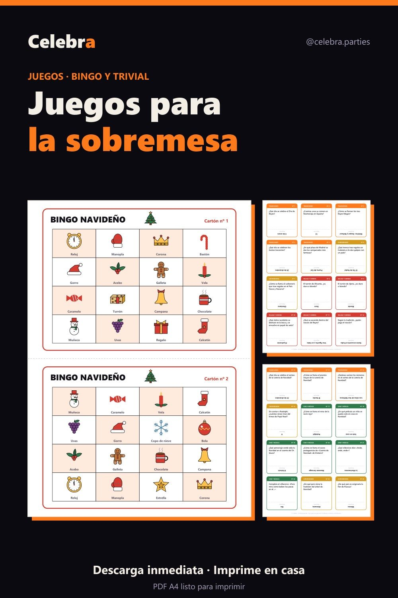
Juegos para la cena de Navidad en familia: 8 ideas para Nochebuena
Juegos para después de la cena de Nochebuena o la comida de Navidad: para todas las edades, para adultos y para niños. Bingo navideño, trivial, juego de misterio, amigo invisible y más, sin necesidad de comprar nada caro.
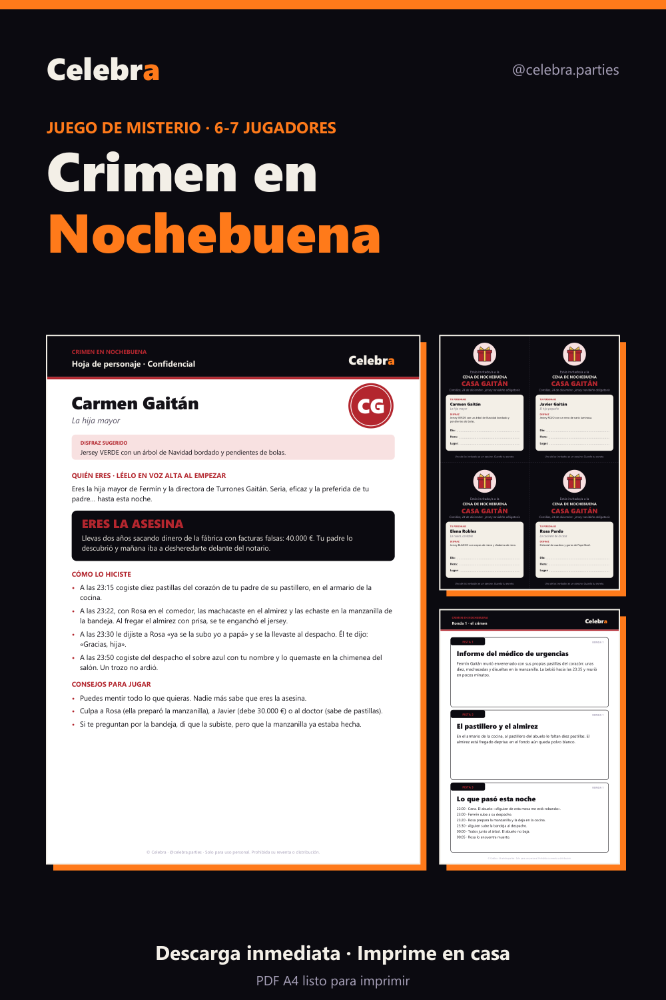
Juego de misterio para Nochebuena: cómo organizar una cena con asesinato en familia
Una idea diferente para la cena de Nochebuena o de empresa: un juego de misterio en el que cada invitado es un sospechoso. Cómo organizarlo paso a paso, con jerseys navideños incluidos.
Historias de Navidad para contar en familia
Cuentos de 5 minutos para leer en voz alta antes de dormir.
El abeto que tenía prisa (cuento de Navidad para leer en familia)
Un pequeño abeto del bosque siempre quiere ser mayor y estar en otro sitio, hasta que una Navidad aprende a disfrutar del ahora. Un cuento dulce de 5 minutos, perfecto para antes de dormir.

Los 3 fantasmas de la Navidad: el cuento de Scrooge para leer con niños
El cuento de los tres fantasmas de la Navidad (Dickens) contado en 7 minutos para leer en familia: Scrooge, el fantasma de las Navidades pasadas, presentes y futuras. Con dibujos para colorear.
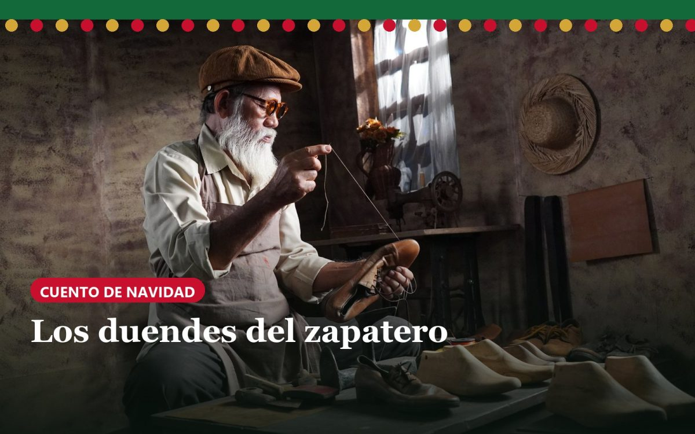
Los duendes del zapatero (cuento de Navidad para leer en familia)
Un zapatero muy pobre encuentra cada mañana unos zapatos perfectos que nadie sabe quién ha hecho. ¿Quién trabaja de noche en su taller? Un clásico de los hermanos Grimm en versión navideña, de 5 minutos.
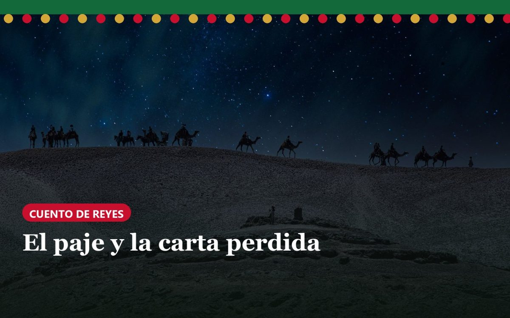
El paje y la carta perdida (cuento de Navidad para leer en familia)
La noche del 5 de enero, Bruno, el paje más joven de los Reyes Magos, pierde la carta de una niña. Tiene hasta el amanecer para encontrarla. Una aventura de 6 minutos para leer la víspera de Reyes.

El regalo más sabio (cuento de Navidad para leer en familia)
Lola y Juan no tienen dinero para regalos de Reyes, así que cada uno vende lo que más quiere. Un cuento tierno con una sorpresa final que se lee en 5 minutos y deja a toda la familia pensando.
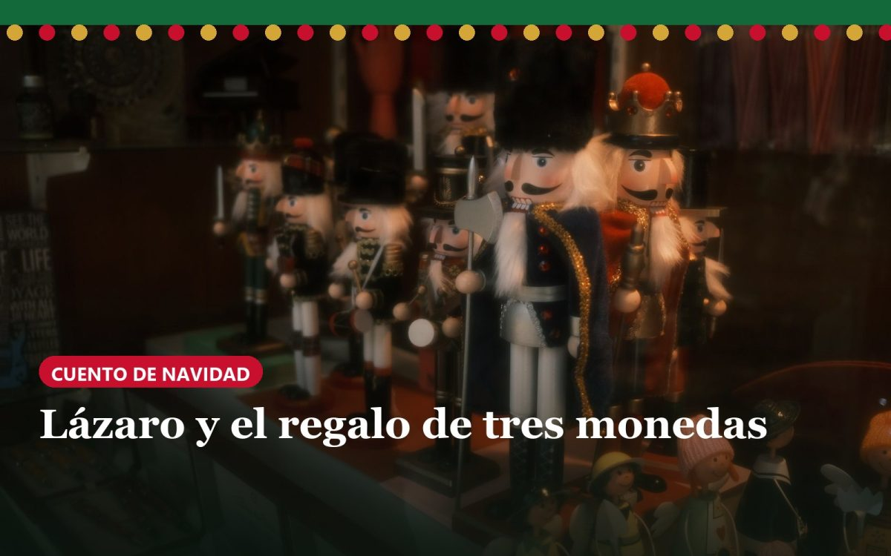
Lázaro y el regalo de tres monedas (cuento de Navidad para leer en familia)
El 23 de diciembre, Alex entra en la vieja tienda de Lázaro con solo tres monedas para el regalo de su abuela. El tendero de toda la vida le enseñará qué regalo vale más que todo. Un cuento cálido de 5 minutos.
Regalos, Adviento y amigo invisible
Qué regalar, cuándo pedirlo para que llegue y cómo organizar el amigo invisible.
Calendario de Adviento personalizado con nombre: 3 formas de hacerlo especial este año
Calendario de Adviento con su nombre bordado, de madera para rellenar o para imprimir en casa con 24 retos. Ideas para niños, pareja y familia, qué meter en cada bolsillo y hasta qué día pedirlo para empezar el 1 de diciembre.
12 regalos originales de menos de 20 € para Navidad y el amigo invisible
Ideas de regalos originales por menos de 20 euros para Navidad, Reyes y el amigo invisible: para niños, para casa, para mascotas y para quien lo tiene todo. Con envío gratis a España.

Calendario de Adviento: cuál elegir y 10 ideas para rellenarlo
Cómo elegir un calendario de Adviento para niños o adultos, cuándo comprarlo para empezar el 1 de diciembre y 10 ideas para rellenar un calendario reutilizable sin gastar mucho.

Hasta cuándo pedir para Navidad y Reyes 2026: fechas límite
Fechas límite para pedir los regalos y la decoración de Navidad y que lleguen a tiempo: antes del 9 de diciembre para Nochebuena y del 18 de diciembre para Reyes. Qué hacer si se te pasa la fecha.
Jerséis y pijamas de Navidad a juego para toda la familia: guía de tallas
Cómo acertar con los jerséis y pijamas de Navidad a juego para la familia: qué talla pedir para adultos, niños, bebés y hasta el perro, y cuándo pedirlos para la foto de Navidad.

Regalos para el amigo invisible de menos de 15, 20 y 30 € (que sí gustan)
Ideas de regalo para el amigo invisible por presupuesto, de menos de 15, 20 y 30 euros, para la familia, la oficina o los amigos. Con envío gratis a España y las fechas para que llegue a tiempo.
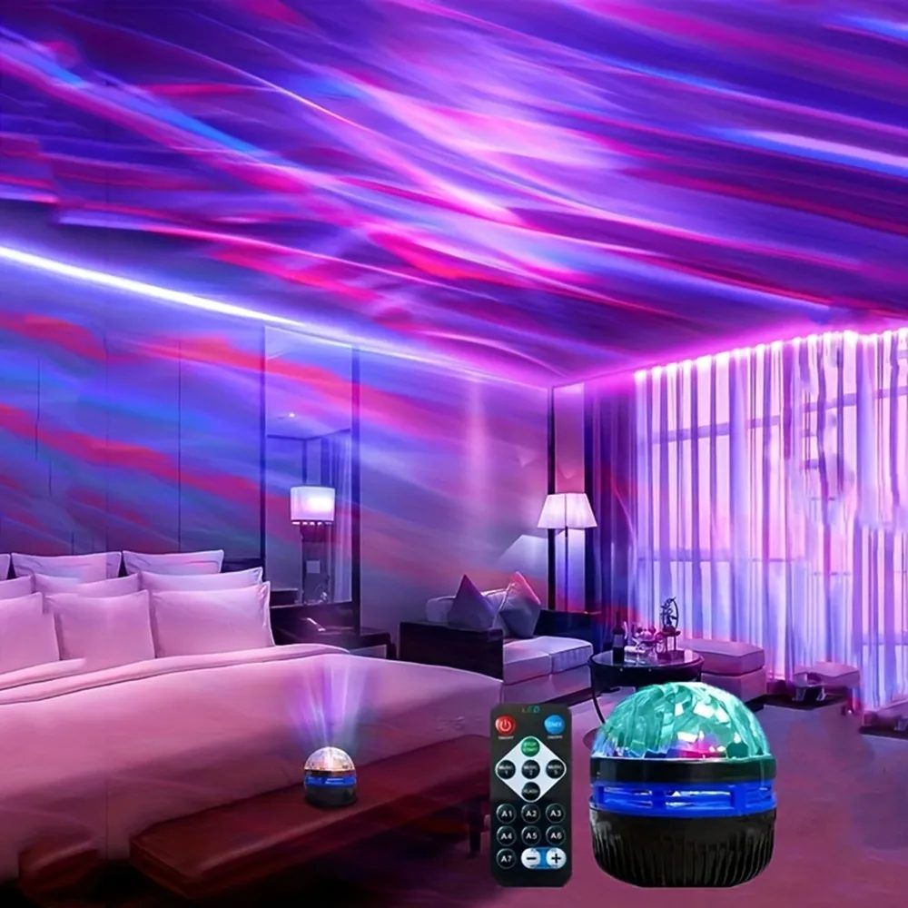
Sorteo del amigo invisible por WhatsApp: gratis, online y sin registro
Paso a paso para hacer el sorteo del amigo invisible online y mandarlo por WhatsApp, gratis y sin registro. Cómo evitar que las parejas se regalen entre sí y qué hacer si alguien no puede participar.
Qué regalar por Reyes según la edad: ideas de 0 a 99 años
Ideas de regalos para Reyes por edades: bebés, niños, adolescentes, adultos y abuelos. Regalos que gustan, con envío gratis a España, y hasta qué día se puede pedir para que lleguen antes del 6 de enero.
Decorar la casa y la mesa
Luces, árbol y la mesa de Nochebuena sin gastar mucho.

Qué tamaño de árbol de Navidad elegir: 120, 150 o 180 cm (y cuántas bolas necesitas)
Cómo elegir la altura del árbol de Navidad artificial según el techo y el sitio que tienes, cuántas bolas y luces lleva cada tamaño y cómo decorarlo para que parezca de escaparate.
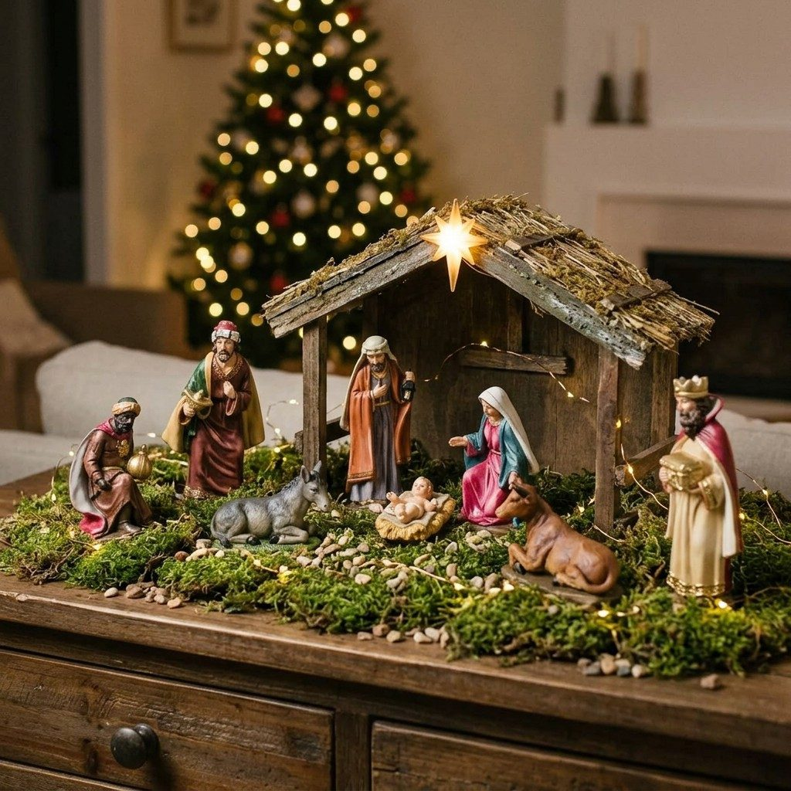
Cómo montar un belén en casa paso a paso (y qué figuras necesitas)
Guía sencilla para montar el belén en casa: qué figuras no pueden faltar, cuándo se pone, cómo hacer el paisaje con corcho y musgo y el truco de mover a los Reyes Magos cada día hasta el 6 de enero.
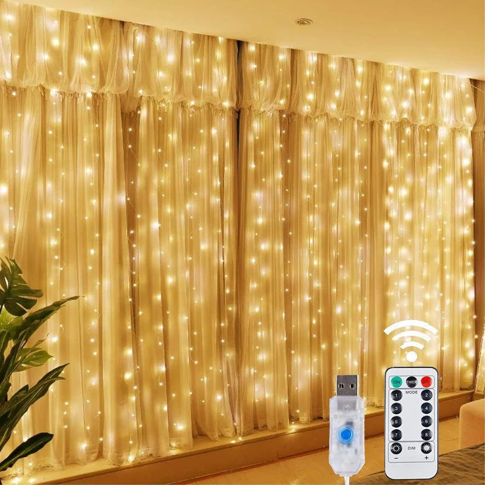
Cómo decorar la casa en Navidad sin gastar mucho: 7 ideas que lucen de verdad
Ideas para decorar la casa en Navidad con poco presupuesto: luces en la ventana, el árbol en un solo color, una corona para la puerta y la mesa de Nochebuena. Qué comprar y qué hacer tú.
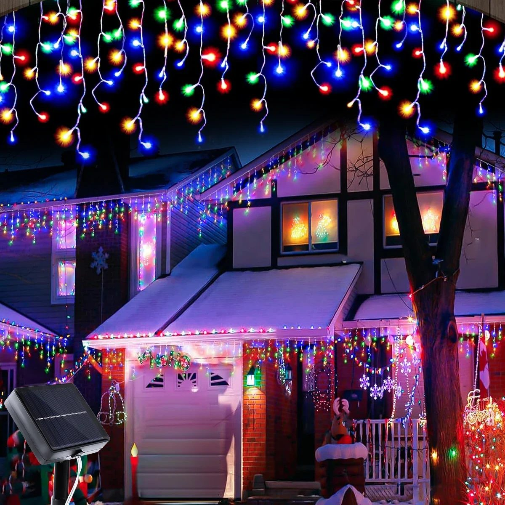
Luces de Navidad: cuáles elegir para dentro, para la ventana y para el exterior
Guía para elegir luces de Navidad: cortinas LED para la ventana, carámbanos y cascadas solares para el exterior, proyectores para la fachada y luces con app. Blanco cálido o multicolor, USB o solar.
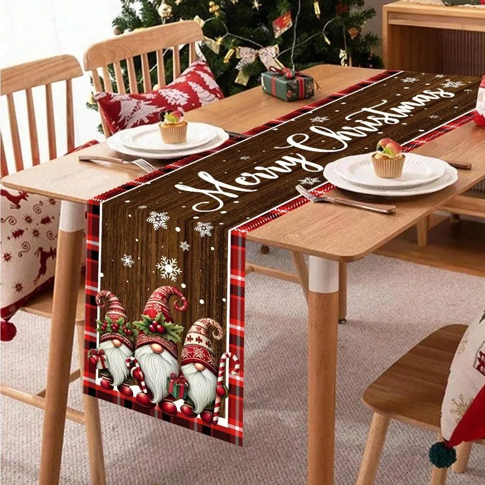
Cómo poner la mesa de Nochebuena: ideas fáciles para que luzca sin gastar mucho
Ideas para decorar la mesa de Nochebuena y Navidad paso a paso: mantel o camino de mesa, centro, velas, tarjetas con el nombre de cada invitado y menú. Qué comprar y qué puedes hacer tú.
Cumpleaños infantiles
Ideas, juegos e invitaciones gratis para cada temática.
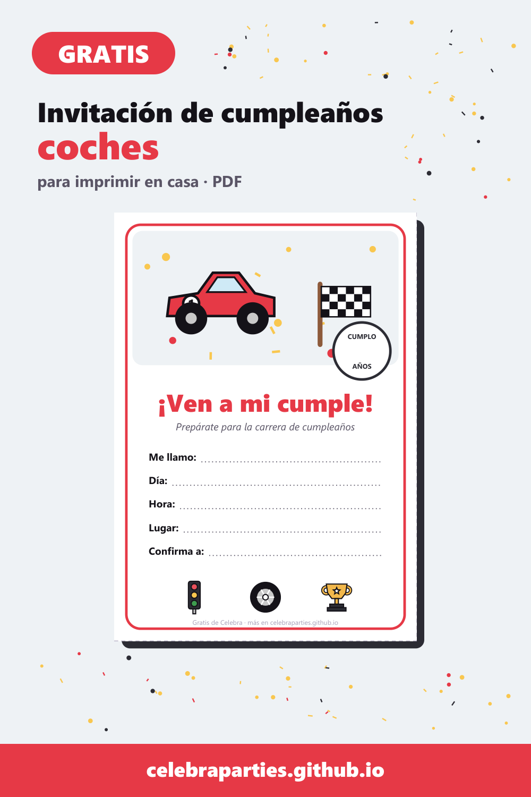
Invitación de cumpleaños de coches gratis para imprimir (y una carrera de cumple)
Descarga gratis 4 invitaciones de coches y carreras en PDF y organiza un cumple a todo gas con decoración, juegos y merienda.
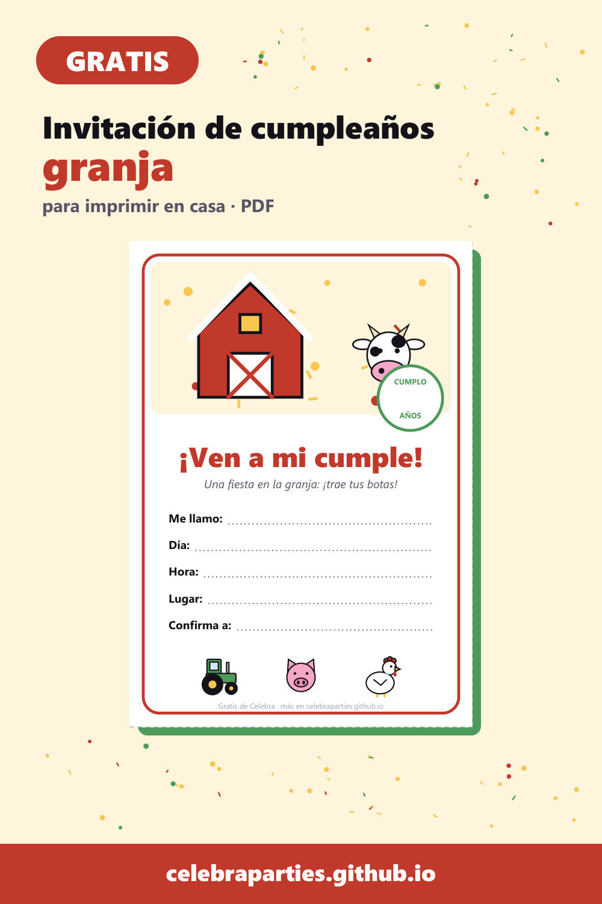
Invitación de cumpleaños de granja gratis para imprimir (con vacas, cerditos y tractor)
Descarga gratis 4 invitaciones de granja en PDF y organiza un cumple en la granja con ideas de decoración, juegos para los más pequeños y merienda.
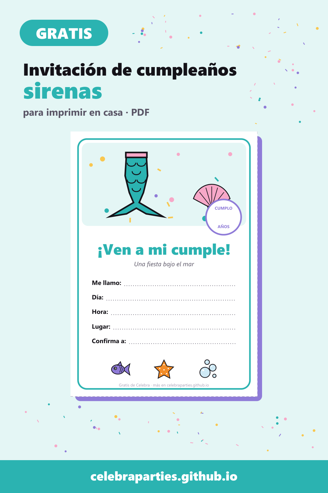
Invitación de cumpleaños de sirenas gratis para imprimir (y una fiesta bajo el mar)
Descarga gratis 4 invitaciones de sirenas en PDF y organiza un cumple bajo el mar con ideas de decoración, juegos y merienda.
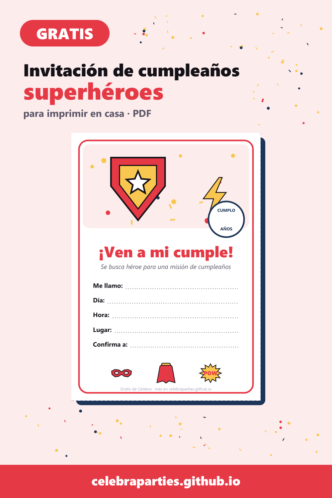
Invitación de cumpleaños de superhéroes gratis para imprimir (y una misión de cumple)
Descarga gratis 4 invitaciones de superhéroes en PDF y convierte el cumple en una misión con pruebas, disfraces caseros y merienda.
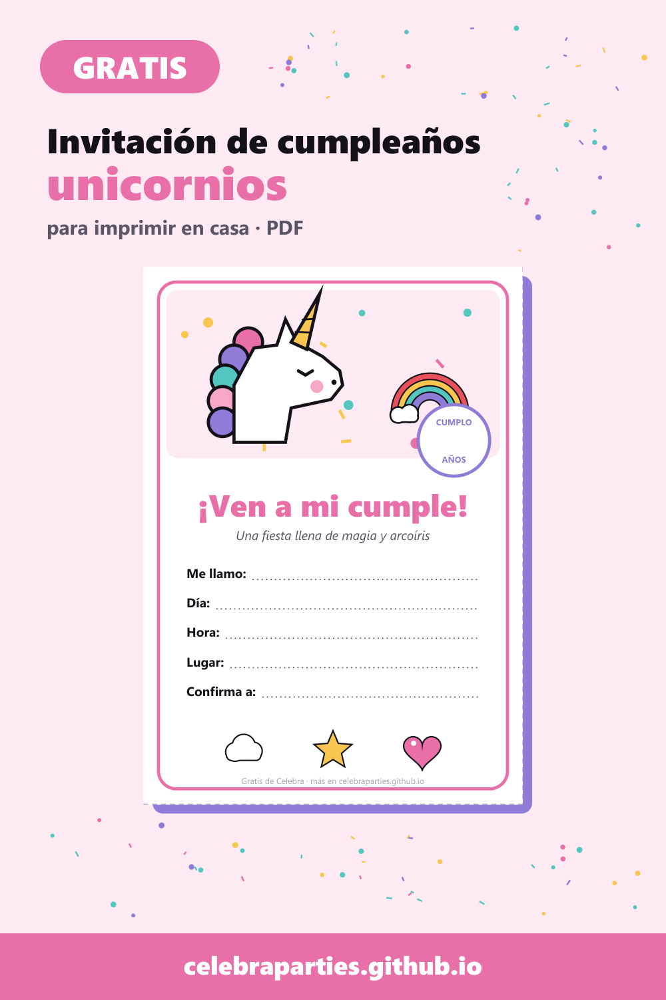
Ideas para un cumpleaños infantil en casa: guía completa (y barata)
Cómo organizar un cumpleaños infantil en casa paso a paso: tema, invitaciones, decoración, juegos, merienda y bolsitas, sin gastar de más.
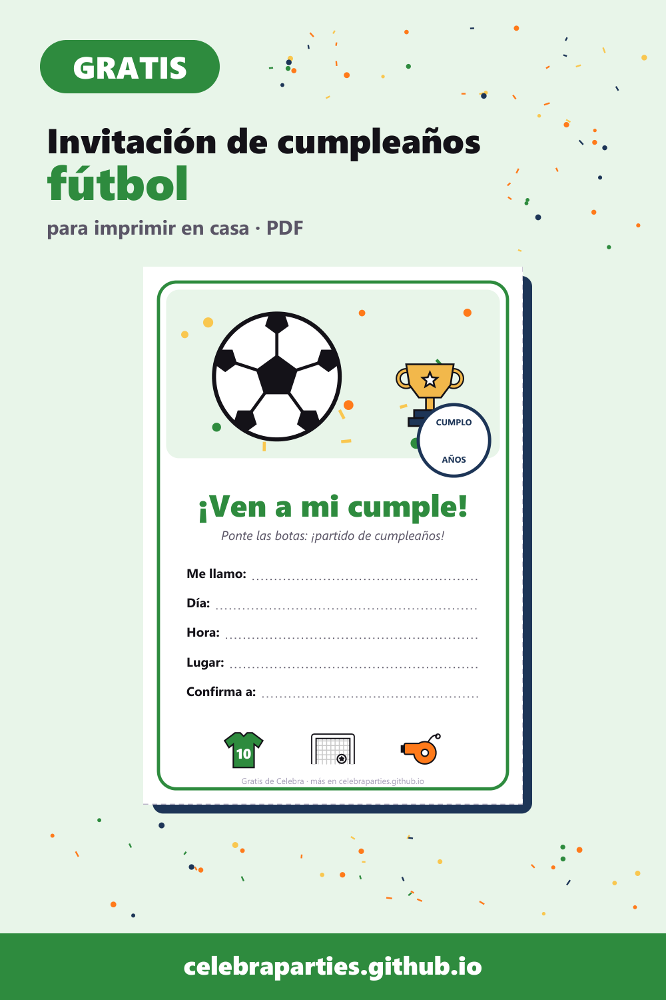
10 juegos para cumpleaños infantiles en casa (de 3 a 10 años)
Los juegos que mejor funcionan en un cumpleaños infantil en casa, ordenados por edad y con lo que necesitas para cada uno. Sin gastar y en poco espacio.
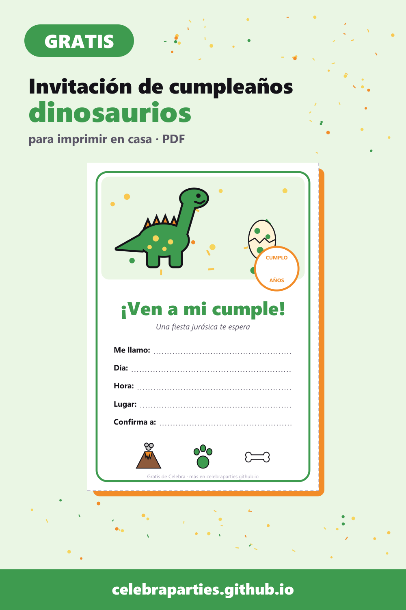
Invitación de cumpleaños de dinosaurios gratis para imprimir (y cómo montar la fiesta)
Descarga gratis 4 invitaciones de dinosaurios en PDF y copia nuestras ideas para un cumple jurásico en casa: decoración, juegos y merienda.
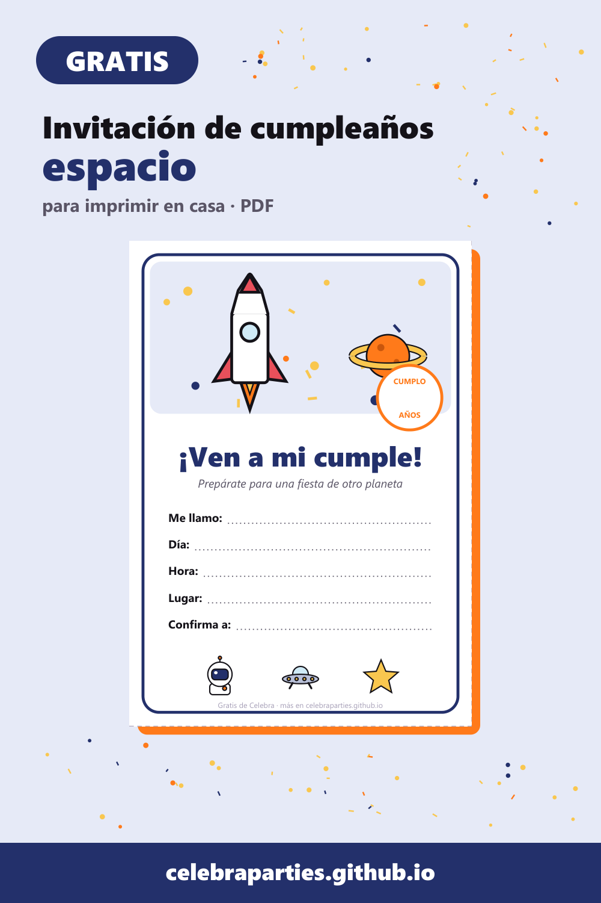
Invitación de cumpleaños del espacio gratis para imprimir (cohetes, planetas y astronautas)
Descarga gratis 4 invitaciones del espacio en PDF y organiza un cumple de otro planeta con estas ideas de decoración, juegos y merienda.
Invitación de cumpleaños de fútbol gratis para imprimir (y un partido de cumple)
Descarga gratis 4 invitaciones de fútbol en PDF e ideas para un cumple futbolero: decoración, juegos por equipos y merienda.
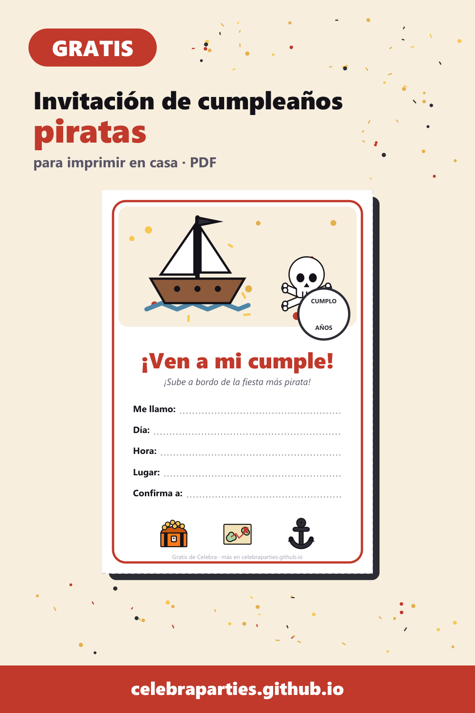
Invitación de cumpleaños pirata gratis para imprimir (con búsqueda del tesoro)
Descarga gratis 4 invitaciones piratas en PDF y monta un cumple al abordaje con mapa del tesoro, juegos y merienda.
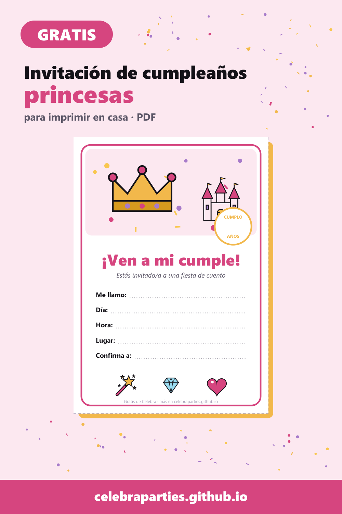
Invitación de cumpleaños de princesas gratis para imprimir (y una fiesta de cuento)
Descarga gratis 4 invitaciones de princesas en PDF e ideas para un cumple de cuento: castillo, coronas, juegos y merienda.
Invitación de cumpleaños de unicornio gratis para imprimir (con ideas para la fiesta)
Descarga gratis 4 invitaciones de unicornio en PDF y monta un cumple mágico en casa con estas ideas de decoración, juegos y merienda.
Cenas y juegos de misterio
Para organizar un «¿quién es el asesino?» en casa.
Halloween · vuelve en septiembre
Ver los 19 artículos
- Disfraces con máscara: 7 ideas de Halloween fáciles en 5 minutos
- Disfraces de Halloween para niños y bebés (y para mamá a juego) que llegan a tiempo
- Decoración de Halloween casera y barata: 12 ideas para tu casa
- 5 dibujos de Halloween para colorear gratis (PDF para imprimir)
- 10 disfraces caseros de Halloween en 10 minutos (con lo que tienes en casa)
- Invitaciones de Halloween para imprimir gratis (PDF)
- 7 juegos de Halloween para niños en casa (con bingo gratis para imprimir)
- Menú de Halloween fácil: 12 recetas terroríficas para niños y adultos
- Los 6 maquillajes de Halloween más típicos y cómo hacerlos en 15 minutos
- 5 planes completos para Halloween 2026, según con quién lo pases
- Plan 3 · Halloween a los 18 (y hasta los 25): la prefiesta que se sale de madre
- Plan 2 · Halloween con adolescentes (de 13 a 17): la casa embrujada
- Plan 5 · Halloween con cena elegante (de 30 en adelante): la mansión y el crimen
- Plan 1 · Halloween en familia (de 4 a 10 años): la tarde de los monstruos
- Plan 4 · Halloween friki: la noche de rol, mesa y cine de culto
- 8 juegos para una fiesta de Halloween que nadie olvida
- La música de Halloween: 25 canciones para la fiesta, de la entrada al susto final
- 10 actividades de Halloween en casa, para niños y para adultos
- Las 12 películas para una noche de Halloween, de menos a más miedo